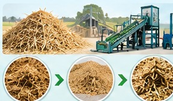
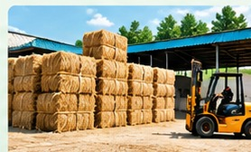
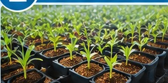
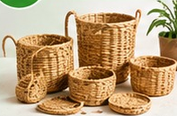
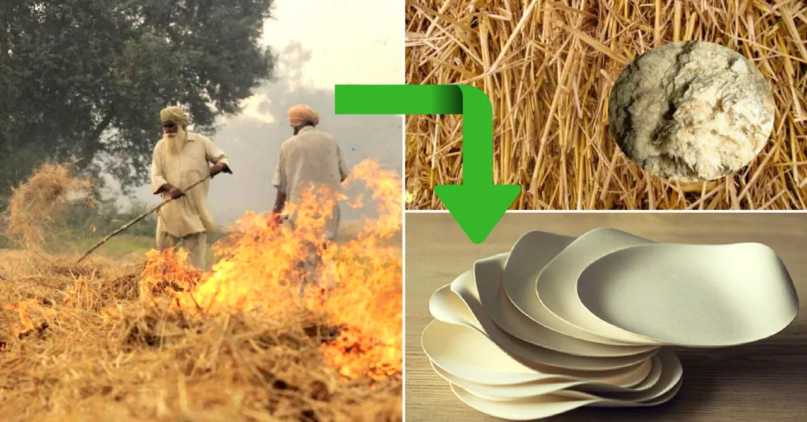
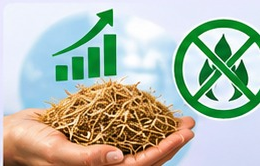

Integrated Agricultural Waste Management
Environmental Sustainability & Bio-Based Resource Utilisation
Transforming agricultural residues into valuable resources through sustainable waste recovery, advanced biomass processing, and circular bioeconomy solutions. Our integrated agricultural waste management approach focuses on the scientific collection, segregation, processing, and valorisation of crop residues, particularly paddy straw, to minimise open-field burning, reduce environmental pollution, and create commercially viable bio-based products.
We promote a resource-efficient, circular agricultural ecosystem that converts post-harvest biomass into value-added materials for agriculture, livestock, packaging, nursery applications, and renewable energy industries. Through mechanisation, decentralised processing infrastructure, and market-linked supply chains, we aim to improve residue utilisation while generating additional income opportunities for farmers, rural entrepreneurs, and women-led self-help groups (SHGs).
Key Capabilities
Mechanised Crop Residue Recovery
Efficient collection, baling, chopping, and aggregation of paddy straw and other agricultural residues.
Biomass Processing & Valorisation
Conversion of agricultural waste into chopped biomass, straw powder, fibre, and other value-added raw materials.
Bio-Based Product Development
Development of straw-based nursery growing media, poultry bedding, fibre-based packaging, paper, cardboard, and artisan products.
Circular Bioeconomy Solutions
Establishment of resource recovery and utilisation pathways that transform agricultural waste into commercially valuable products.
Biomass Supply Chain Management
Development of decentralised collection, storage, transportation, processing, and buyer-linkage networks.
Renewable Energy Applications
Exploring agricultural biomass utilisation for biogas and other bioenergy applications, subject to technical and economic feasibility.
Rural Enterprise & Women Empowerment
Promoting SHG-led biomass processing, mushroom cultivation, handmade paper, and other village-level enterprises.
Environmental Impact & Sustainability
- Reduction in Open-Field Burning Promoting alternative residue management pathways to minimise crop-residue burning and associated air pollution.
- Climate Change Mitigation Supporting lower-emission agricultural practices and exploring biomass utilisation pathways that can contribute to greenhouse gas emission reduction.
- Resource Conservation Encouraging efficient utilisation of agricultural biomass, reducing waste generation, and promoting responsible resource management.
- Soil Health Protection Promoting appropriate residue management practices that support soil organic matter conservation and long-term soil sustainability.
- Pollution Prevention Reducing uncontrolled biomass disposal and associated environmental contamination through organised collection and processing.
- Circular Resource Utilisation Replacing selected conventional raw materials with agricultural residue-based alternatives wherever technically and commercially feasible.
- Sustainable Rural Development Creating decentralised value chains that combine environmental protection, additional farmer income, local employment, and inclusive economic growth.







Our Vision
To establish an integrated agricultural circular economy where crop residues are transformed from an environmental burden into valuable economic resources. We aim to accelerate the transition towards low-waste, resource-efficient, climate-resilient agriculture while reducing environmental pollution, strengthening rural livelihoods, and creating sustainable bio-based industries.